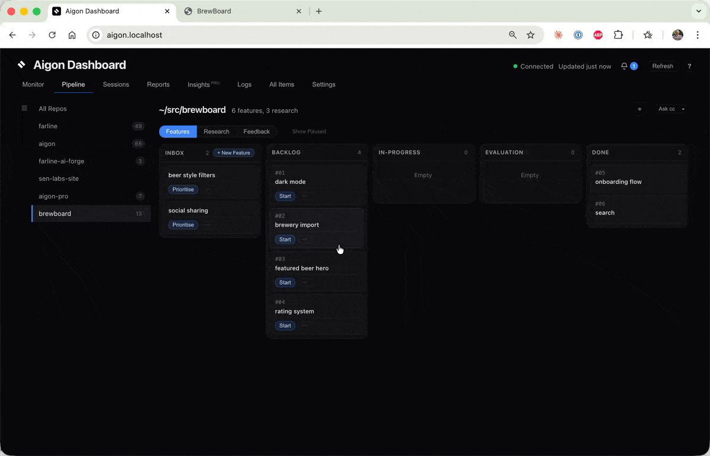
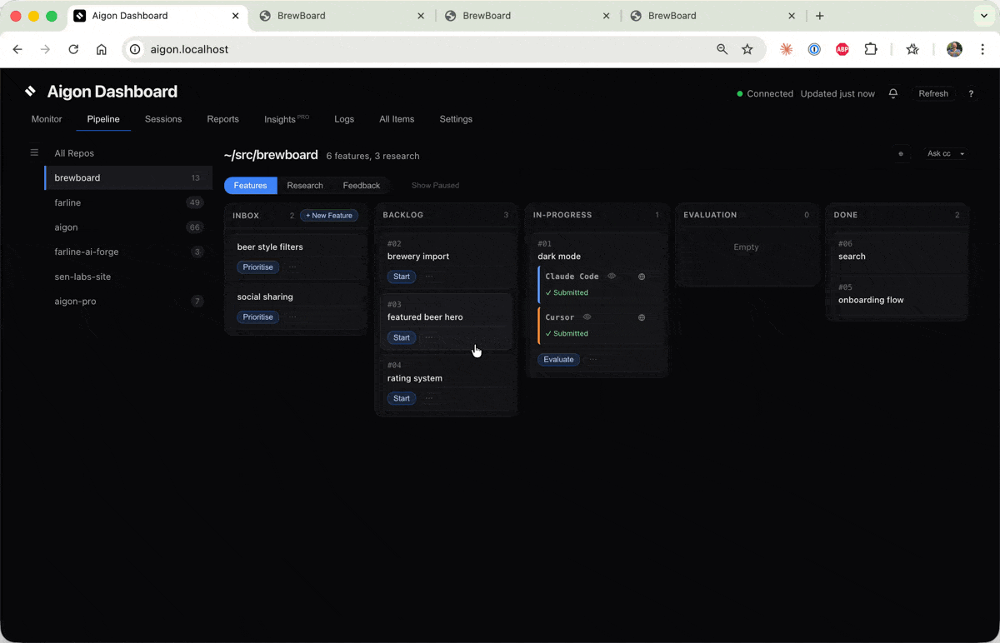
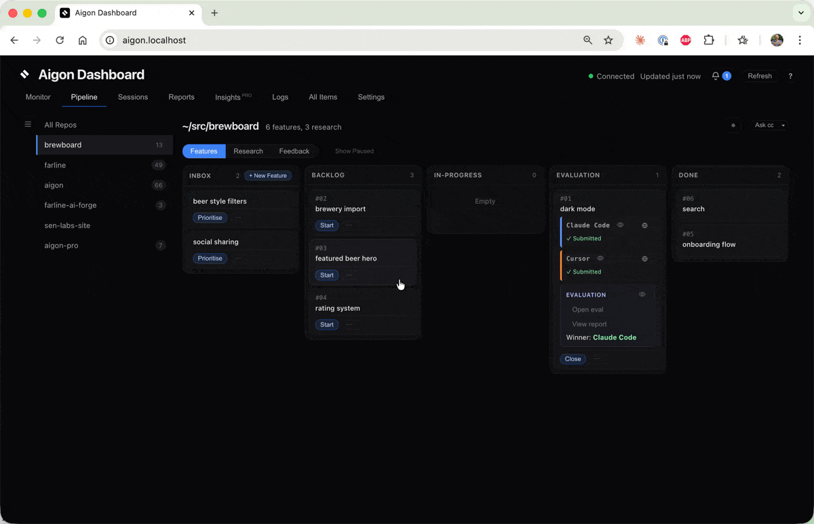
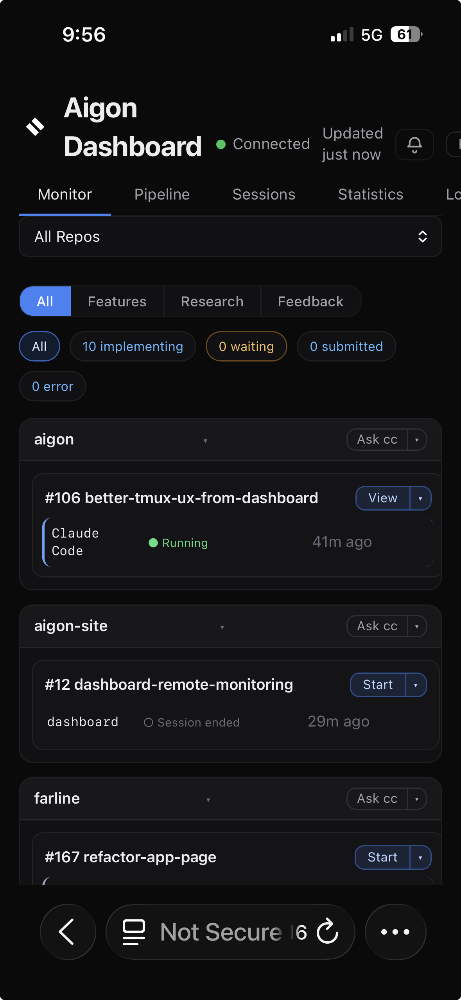
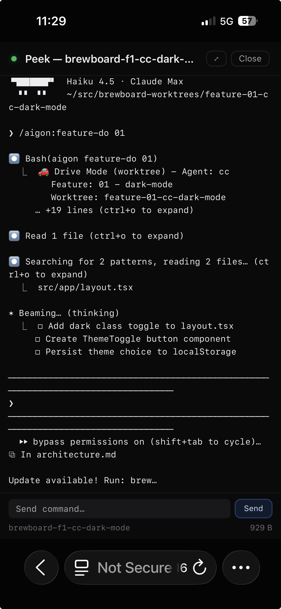
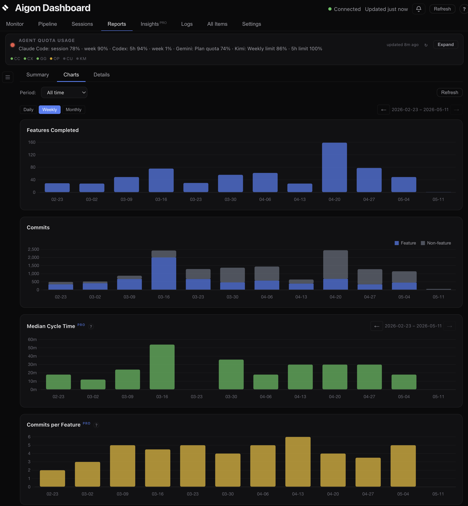
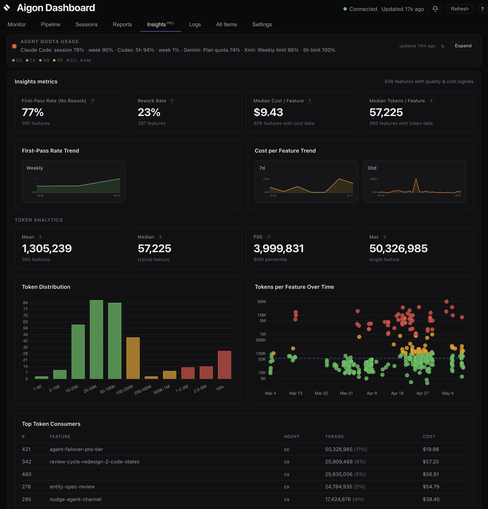

Terminal tabs everywhere
Parallel agents generate momentum, but tracking what each one did and why becomes manual overhead.
Spec-driven development · Multi-agent orchestration
Open-source orchestration for AI coding agents: Markdown specs in your repo, a full create → merge lifecycle (plus research/feedback), and workflows you can repeat or reset. Drive it from slash commands, a local dashboard, or the aigon CLI — one pipeline, no required SaaS, bring your own agents and subscriptions.

You already pay for the models — Aigon turns them into a repeatable system, not a pile of chats.
main through one workflow.At a glance
Capabilities and surfaces — the mechanics behind the “why” above.
Claude Code and Cursor compete, Codex evaluates — best implementation wins.
1. Fleet started — agents implementing in parallel

2. Both submitted — Codex evaluating

3. Evaluation complete — winner, Claude Code merged, with the best from Cursor implementation

Documentation
The same entry points as the docs home — concepts, install, guides, and full CLI reference.
Three workflows, four execution modes, and how Aigon organises your work.
Install Aigon and run your first feature loop in under five minutes.
Step-by-step walkthroughs for Drive, Fleet, Research, and Dashboard.
CLI commands, configuration, agents, and file structure.
The problem
Parallel agents generate momentum, but tracking what each one did and why becomes manual overhead.
Without spec-linked workflows, merge decisions and implementation tradeoffs disappear into chat history.
Teams rarely compare multiple implementations side-by-side before merging the best approach.
User feedback, research, and implementation often live in separate tools with no shared lifecycle.
How it shows up
Use the AI products you already pay for — Claude, Codex, Gemini, Cursor. No separate Aigon AI billing, no token packs, no markup. You choose which provider handles which stage.
If one subscription runs out mid-session, switch agents or accounts and keep going — you are not stuck on a single vendor's meter, so momentum survives.
Features and research live as specs that can be built, shipped, reset, and rebuilt. Repeatable structure means clean handoffs and clean retries — less tribal knowledge buried in chat history.
Kick off long runs and walk away. Configure who drafts, who implements, and who reviews, then follow a pre-built lifecycle through push and merge instead of hand-orchestrating every step.
Specs and implementation summaries feed forward into what agents see next, so work accrues as durable project context rather than disappearing when a session ends.
Agents run in plain tmux sessions you can attach to, read, and take over. CLI + git on your machine — no required hosted platform, and it fits GitHub PRs and team review cleanly.
CLI in action
Value proposition
Traceability
Research, feature specs, implementation logs, and evaluations stay in Markdown files your team can review and version.
docs/specs/features/03-in-progress/
docs/specs/features/logs/Vendor independent
Run the same workflow with Claude, Gemini, Cursor, and Codex without rewriting your process around one tool.
aigon install-agent cc gg cx cuShared lifecycle
Aigon links discovery, implementation, review, and follow-up so each cycle improves the next one.
research -> feature -> eval -> closeOperational clarity
Pick the right execution mode for each task and make expected behavior explicit before coding starts.
aigon feedback-triage 14How it works
Choose your mode
Hands-on + one agent
Use when you want tight control over implementation details and review checkpoints.
aigon feature-start 07Outcome: one guided implementation branch with a full spec and log trail.
Hands-on + multi-agent
Orchestrate competing implementations you can evaluate and adopt the best from.
aigon feature-start 07 cc gg cxOutcome: parallel worktrees and comparable outputs for structured selection.
Hands-off + one agent
Use when the scope is clear, but you want the peace of mind of a reviewing agent.
aigon feature-autonomous-start 07 cx --review-agent=cc --stop-after=closedOutcome: automated implement-validate loop that stops when checks pass or budget ends.
Hands-off + multi-agent
Fully orchestrated, fully autonomous — parallel agent runs converge into comparable outputs ready for auto evaluation and completion.
aigon feature-autonomous-start 07 gg cx --eval-agent=cc --stop-after=closedOutcome: concurrent autonomous runs across agents with logs ready for comparison.
The steps
Create a feature spec and move it into the backlog.
Your workflow, visualised
The Aigon Dashboard is the visual way into your spec-driven workflow. Same pipeline, same agents — but managed through a browser UI instead of CLI commands. Drag features across columns, launch agent sessions with one click, and watch your pipeline move in real time. No terminal required.
Visual Workflow
Move features through your development pipeline with a familiar Kanban interface. Every column maps to an Aigon workflow state — no commands to memorise.
Monitor
The monitor tab shows running sessions, attention items, and recent events across all your repositories — everything you need to know at a glance.
Reports
Five aligned charts — features completed, commits, cycle time, commits per feature, and rework ratio — show whether your team is shipping faster, writing tighter code, and fixing less. Summary cards, agent leaderboard, and filterable detail tables give you the full picture.
Telemetry
Track token usage and cost across Claude, Gemini, and Codex sessions — broken down by activity type (implement, evaluate, review) and attributed per agent. See exactly where your spend goes. Learn more →
Remote Access
The dashboard runs on your local network — open it on your phone or tablet over LAN, or use Tailscale to check on your agents from anywhere. Monitor from the couch.


Workflow Intelligence
Five aligned charts track the metrics that matter: are features shipping faster? Are agents producing cleaner code? Is rework going down? Reports gives you the data to answer these questions — across every repo, every agent, every period.

Features completed and commits over time — stacked to show feature-attributed vs non-feature work.
Median cycle time and commits-per-feature trending over time. See whether features are getting tighter.
Percentage of fix commits per period. Trending down means agents are landing correct code on the first pass.
Documentation
git clone https://github.com/jayvee/aigon.git
cd aigon
npm install
npm link
cd /path/to/your/project
aigon init
aigon install-agent cc gg cx cuThen, in Claude Code:
/aigon:feature-now dark-mode
Implement a dark mode capability to the website,
with dark mode/light mode toggle in the top right
position of the menu barTech & philosophy
Aigon is built for teams who want disciplined AI-assisted engineering, not opaque automation.
Community
Contribute specs, improve workflows, and share real-world patterns for running multi-agent engineering teams effectively.
Aigon Pro
Agent quality metrics, synchronized trend charts, and AI-powered coaching — so you know which agents deliver, how your workflow evolves, and where to improve.
